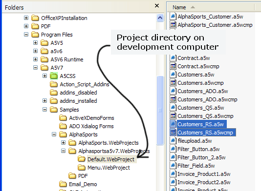
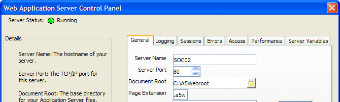
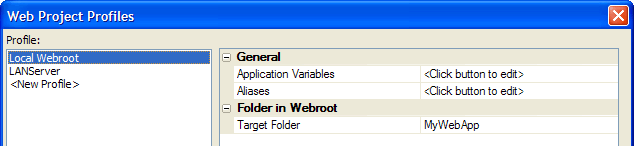
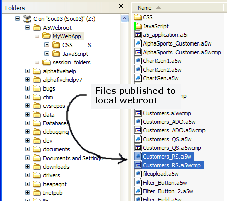
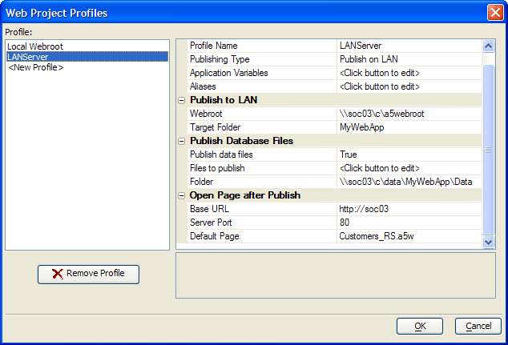
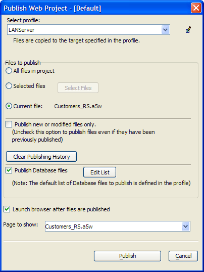
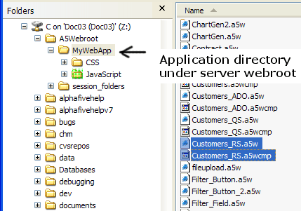
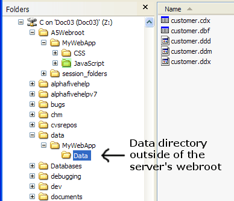

Publishing a Page to a Server
The following is a step by step example of publishing a page and associated data files to a server, and then viewing the published page.
The following picture shows the page ( Customers_RS.a5w ) and its embedded grid component ( Customers_RS.a5wcmp ) that will be published. They are located in the Default web project folder under the AlphaSportsA5V7 database. The folder's path is c:\program files\a5v7\samples\alphasports\alphasportsa5v7.webprojects\default.webproject. Note that after I opened the AlphaSportsA5V7 database and opened the Web Projects Control Panel, it automatically created the alphasportsa5v7.webprojects and alphasportsa5v7.webprojects\default.webproject directories.

When initially configuring the Application Server, I defined my Document Root (local webroot) folder to be c:\a5webroot and the Server Port to be 80.

I modified the Local Webroot profile as shown in the picture below. I changed the Folder in Webroot > Target Folder property to "MyWebApp". This meant that the Web Projects Control Panel created the folder named c:\a5webroot\MyWebApp when I published the first file to the local webroot.

During the development of the Customers_RS grid and page, I published them to the local webroot to see if I was satisfied with the design. The following picture shows the files I published. The publishing process also automatically created the c:\a5webroot\mywebapp\javascript, c:\a5webroot\mywebapp\css, and c:\a5webroot\mywebapp\css\sunset directories and copied the Sunset cascading stylesheet to this last directory.

Next I configured a profile named "LANServer" for my server computer.

There are several important properties that I had to set.
Property | Value | Comment |
General > Publishing Type | Publish on LAN | I could have also published via FTP, but the same principles apply to defining paths on the remote server. |
General > Aliases | PathAlias.ADB_Path = c:\data\mywebapp\data | The PathAlias.ADB_Path alias defines the location of the published data. This data was published outside of the server's webroot. This protects the data against unauthorized access. I created the c:\data\mywebapp\data directory.
|
Publish to LAN > Webroot | \\soc03\c\a5webroot | The Application Server on the server computer ( soc03 ) defined the local webroot directory to be c:\a5webroot.
|
Publish to LAN > Target folder | MyWebApp | This says that my web files will be published to the c:\a5webroot\MyWebApp folder on the server computer. |
Publish Data Files > Publish data files | True | This says that the publishing process needs to copy data files (the customer table) to the server computer. |
Publish Data Files > Files to publish | customer.dbf | I clicked |
Publish Data Files > Folder | \\soc03\c\data\mywebapp\data | This says that my web files will be published to the c:\data\mywebapp\data folder on the server computer. |
Open Page after Publish > Base URL | http://soc03 | This says that my browser should look to the webroot of soc03 for published files. This location of the server's webroot is specified on the General tab of the Application Server Control Panel. |
Open Page after Publish > Server port | 80 | This says that my browser should look at port 80 of soc03. This value is specified on the General tab of the Application Server Control Panel. |
Open Page after Publish > Default page | customers_RS.a5w | This is the page to open when no other page is specified. This setting overrides the settings made on the General tab of the Application Server Control Panel. |
This picture shows thedialog when I published the customers_RS page to the server. Things to note:
the Select profile value is "LANServer", the profile for the server soc03.
the Files to publish value is "Current file", because I selected the customers_RS page before clicking Publish.
the Publish new or modified files only check box is cleared, because the PathAlias.ADB_Path alias is newly defined.
the Publish Database files check box is set, because I wanted to click Edit List and select the customer.dbf table.
the Launch browser after files are published check box is set, because I wanted the browser to immediately display the published page.

The following picture shows the page and grid component published to the MyWebApp directory under the server's webroot.

The following picture shows the customer table files published to the c:\data\MyWebApp\data directory on the server.

See Also
Contents, Publishing a Web Project, Path and Connection String Aliases